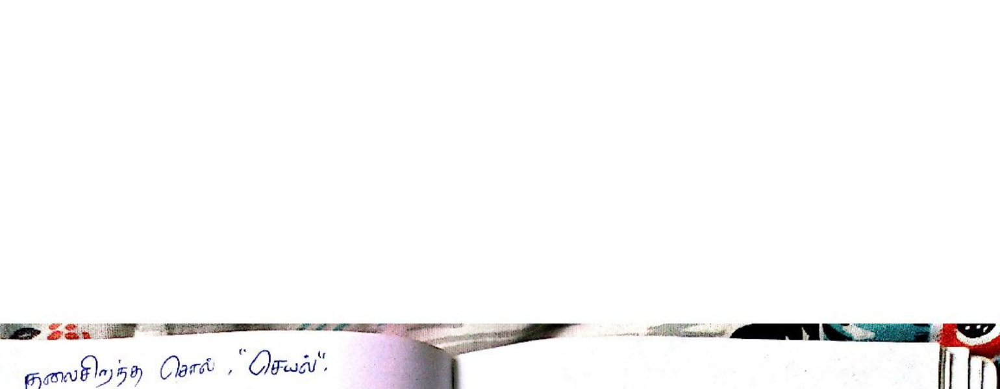
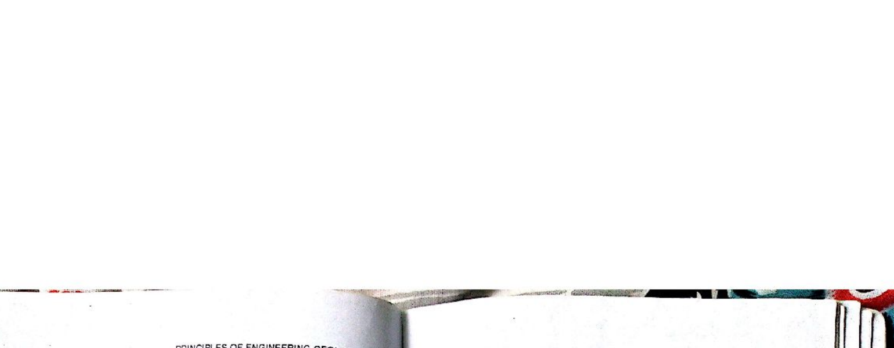
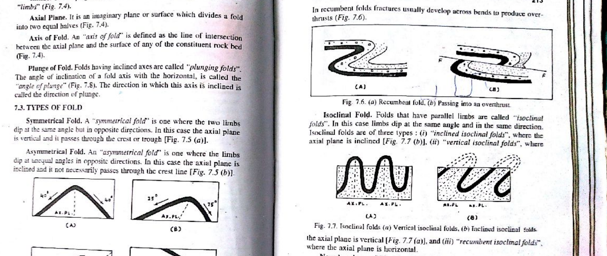
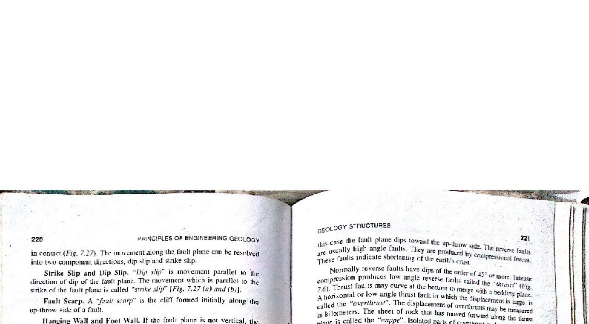
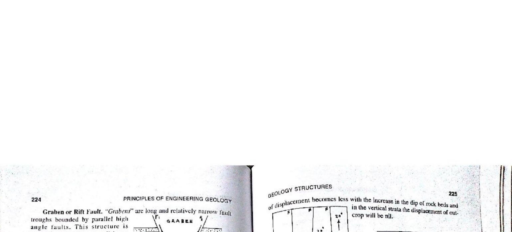

7.1 Dip and Strike: Spatial Orientation of Strata
The structural attitude of any planar geological feature (bedding plane, fault surface, joint, dike) is uniquely defined in 3D space by two angular parameters measured with a Brunton compass:
- Strike: The compass direction or bearing of a horizontal line drawn on the planar rock surface. It is always perpendicular to the direction of true dip.
- Dip: The angle of inclination of the rock surface measured downward from the horizontal plane:
- True Dip: The maximum angle of inclination, measured strictly perpendicular to the strike line.
- Apparent Dip: The angle of inclination measured in any other non-perpendicular direction. Apparent dip is always less than true dip: $$\tan(\text{Apparent Dip}) = \tan(\text{True Dip}) \cdot \cos \theta$$ where $\theta$ is the horizontal angle between the strike direction and the apparent dip direction.

7.2 Folds: Anatomy, Mechanics, and Classification
A fold is a wave-like structural undulation or curvature produced in layered rocks as a consequence of ductile compressive deformation.
Anatomy of a Fold
- Anticline: A convex-upward fold arching strata such that the oldest rocks occupy the core of the fold.
- Syncline: A concave-upward trough-like fold such that the youngest rocks occupy the core of the fold.
- Hinge Line: The line connecting points of maximum structural curvature on a folded layer.
- Axial Plane (Axial Surface): An imaginary planar surface that bisects the fold, passing through the hinge lines of successive folded layers.
- Limbs (Flanks): The sloping sides of a fold on either side of the axial plane.
- Plunge: The angle of inclination of the fold axis measured from the horizontal plane in the vertical plane.


Morphological Classification of Folds
- Symmetrical Fold: Axial plane is vertical; limbs dip in opposite directions at equal angles.
- Asymmetrical Fold: Axial plane is inclined; limbs dip in opposite directions at unequal angles.
- Overturned Fold: Axial plane is inclined such that both limbs dip in the same general direction, with one limb inverted (upside down).
- Recumbent Fold: Axial plane is virtually horizontal ($\text{dip} < 10^\circ$), with the inverted limb lying beneath the normal limb.
- Isoclinal Fold: Both limbs dip in the same direction at exactly identical angles (limbs are parallel).
- Chevron Fold: Characterized by sharp, angular, razor-like hinges and planar, straight limbs.
7.3 Faults: Mechanics and Classification
A fault is a planar rock fracture or fracture zone along which there has been significant measurable displacement of the opposing blocks parallel to the fracture surface.

Terminology of Faults
- Fault Plane: The fracture surface along which displacement took place.
- Hanging Wall: The block of rock that lies immediately above an inclined fault plane.
- Footwall: The block of rock that lies immediately below an inclined fault plane.
- Hade: The complementary angle to the dip of the fault plane, measured from the vertical ($\text{Hade} = 90^\circ - \text{Dip}$).
- Throw: The vertical component of slip displacement between the displaced blocks.
- Heave: The horizontal component of slip displacement measured perpendicular to the fault strike.

Genetic Classification of Faults
- Normal (Gravity) Fault: Hanging wall moves downward relative to the footwall under extensional tectonic stress ($\sigma_1$ vertical). Results in crustal lengthening.
- Reverse Fault: Hanging wall moves upward relative to the footwall under horizontal compressional stress ($\sigma_3$ vertical). A reverse fault with dip $<45^\circ$ is termed a Thrust Fault; if dip $<10^\circ\text{--}15^\circ$ with displacement over many kilometers, it forms a Nappe / Overthrust.
- Strike-Slip (Wrench / Tear) Fault: Movement is purely horizontal, parallel to the fault strike ($\sigma_2$ vertical). Fault plane is usually vertical. Divided into Dextral (right-lateral) and Sinistral (left-lateral).
- Horst and Graben: Parallel normal faults produce an uplifted block (Horst) or a central downdropped trench (Graben / Rift Valley, e.g., Rhine Graben, Narmada Valley).
7.4 Joints and Unconformities
Joints: Fractures or cracks in rocks along which there has been zero or imperceptible displacement. Joints occur as systematic parallel sets or intersecting orthogonal systems. Types include:
- Columnar Joints: Hexagonal cooling columns in basaltic lava flows.
- Sheet Joints: Horizontal curved joints in granitic exfoliation domes.
- Tectonic Tension & Shear Joints: Formed during folding and faulting at $45^\circ$ to compressive stress.
Unconformities: A surface of erosion or non-deposition separating younger strata above from older rocks beneath, representing a major hiatus in the geological time record:
- Angular Unconformity: Younger horizontal strata lie upon older tilted, folded, or deformed strata.
- Disconformity: Parallel sedimentary strata separated by an irregular, undulating subaerial erosion surface.
- Nonconformity: Sedimentary strata resting directly upon an eroded surface of crystalline igneous or metamorphic basement rocks (e.g., Cuddapah sediments resting on Peninsular Gneiss).